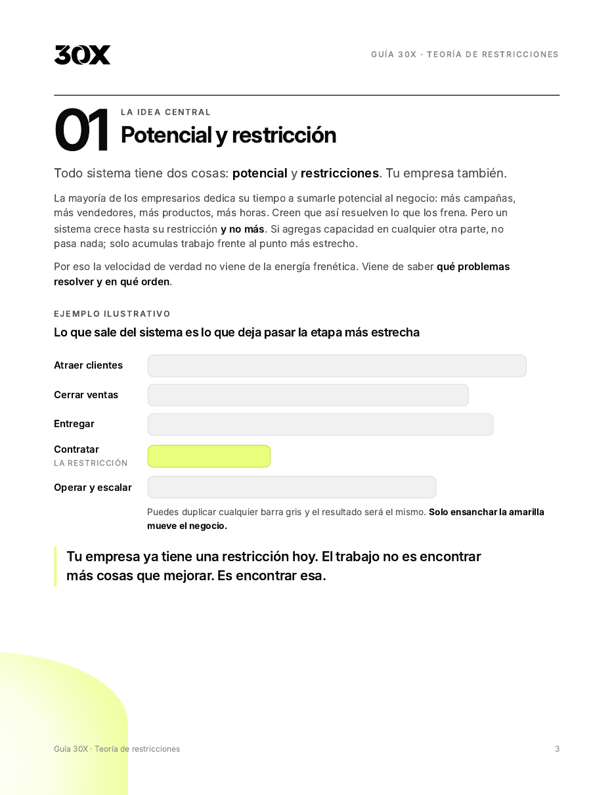
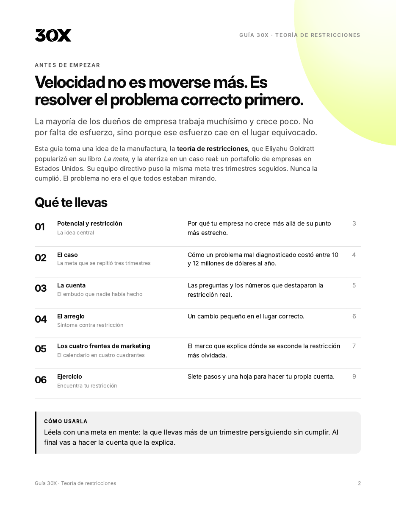
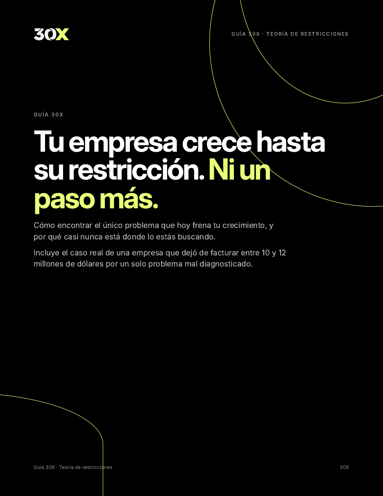

Tu empresa crece hasta su restricción. Ni un paso más.
Cómo encontrar el único problema que hoy frena tu crecimiento. Con el caso real de una empresa que dejó de facturar entre 10 y 12 millones de dólares por un solo problema mal diagnosticado.



El diagnóstico toma 2 minutos: 9 preguntas y un reporte al instante.
Qué hay dentro
La idea de la teoría de restricciones aterrizada en un caso real, con las cifras completas y un ejercicio para hacer tu propia cuenta.
- 01
Potencial y restricción
Por qué tu empresa no crece más allá de su punto más estrecho.
- 02
La meta que se repitió tres trimestres
El caso real y lo que estaba en juego.
- 03
La cuenta que nadie había hecho
El embudo de contratación y el balance que destapó la restricción.
- 04
Un cambio pequeño en el lugar correcto
Síntoma contra restricción, y el arreglo.
- 05
Los cuatro frentes de marketing
El marco que muestra dónde se esconde la restricción más olvidada.
- 06
Ejercicio: encuentra tu restricción
Siete pasos y una hoja de trabajo.
¿Y si estás resolviendo el problema equivocado?
Responde 9 preguntas y descubre cuál de las cinco restricciones frena hoy tu negocio: conseguir clientes, cerrar ventas, oferta y precio, equipo, o sistemas y escala.